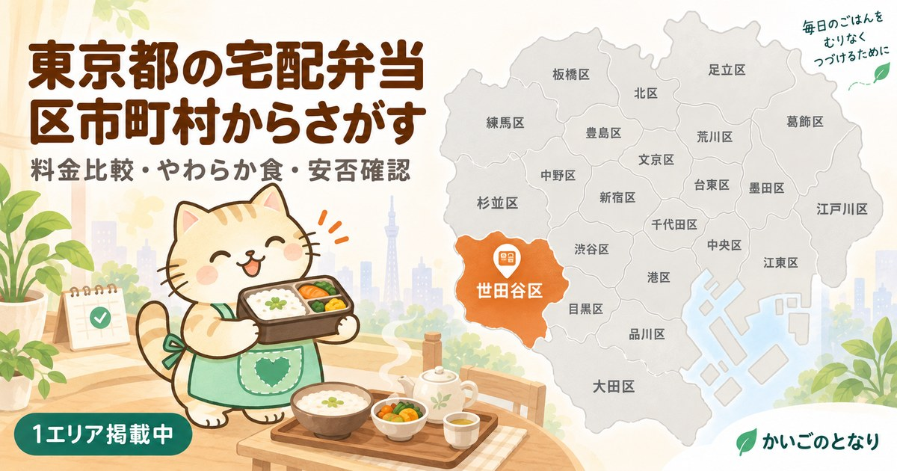

東京都の宅配弁当・配食サービス

高齢者専門の配食サービスは、ふつうの宅食と3つの点で違います。手渡しがそのまま安否確認になること、やわらか食・ムース食があること、腎臓食・透析食などの治療食に対応できること。お住まいの地域を選んでください。
市区町村から探す
世田谷区掲載中練馬区掲載中大田区掲載中江戸川区掲載中足立区準備中杉並区掲載中板橋区掲載中葛飾区準備中品川区準備中江東区準備中北区準備中中野区準備中豊島区準備中新宿区準備中目黒区準備中墨田区準備中文京区準備中荒川区準備中台東区準備中渋谷区準備中港区準備中中央区準備中千代田区準備中八王子市準備中町田市準備中調布市準備中三鷹市準備中武蔵野市準備中狛江市準備中
東京都内で掲載中のエリアは6件です。準備中のエリアは、掲載できる事業者情報がそろい次第の公開となります。
区の配食サービスは、区ごとに中身が違う
東京23区の多くが独自の配食サービス事業を持っています。ただし対象要件・自己負担額・配達曜日は区ごとにまったく違います。「23区だから同じ」という前提で調べると外れます。
- 対象要件を最初に確認する年齢だけでなく、ひとり暮らしかどうか、調理が困難な状態かどうかなど、細かい条件が設定されています。
- 申込窓口は福祉の担当課介護保険の窓口とは別なことが多く、区によっては総合支所ごとに受付が分かれています。
- 対象外でも民間サービスは使える区の事業に該当しない場合でも、民間の高齢者向け宅配弁当は誰でも利用できます。
配達エリアは「区」ではなく「町域」で決まる
高齢者向けの配食は手渡しが基本のため、1店舗がカバーできる範囲が限られます。同じ区内でも担当店舗が分かれ、区の端では配達対象外ということもあります。申し込みの前に、番地まで伝えて確認するのが確実です。
東京都のほかのサービス
東京都の訪問介護ホームヘルパーが自宅に来て、入浴・食事・掃除を手伝う介護保険サービス東京都の訪問看護医療的なケアが必要でも自宅で暮らすための、看護師の訪問東京都のデイサービス送迎・入浴・食事・機能訓練を日帰りで。家族が休める時間もつくる東京都のショートステイ数日から数週間あずけて、介護する側が倒れる前に休む東京都の福祉用具レンタル介護ベッドも車いすも、買う前に借りられる。住宅改修は20万円まで東京都の高齢者可の賃貸年齢を理由に断られない部屋探し。公的な居住支援と専門サービス東京都の家事代行介護保険では頼めない掃除・洗濯・買い物・庭の手入れを任せるエリア準備中東京都の見守りサービスひとり暮らしの安否を、センサー・電話・訪問で確かめる仕組みエリア準備中東京都の終活生前整理・エンディングノート・相続の手続きを、家族が困らない形にエリア準備中